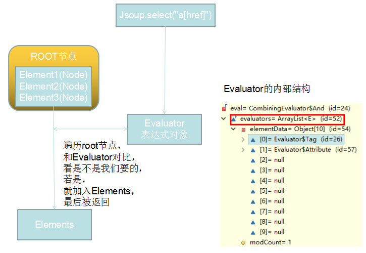

线看一下大体的思路。  Evaluator:表达式的意思，我们在select方法中输入的参数，会被转换成这个对象。 1、Evaluator的获取 Evaluator对象的实例化是在Selector的构造方法中完成的 这段代码，实例化了Selector。 进入Selector的构造方法（见下），可以看到一段代码：this.evaluator = QueryParser.parse(query);，说明QueryParser.parse(query)方法实例化了一个Evaluator对象 城上所讲，进入parse方法，代码如下： 而里面的代码比较复杂，需要单辟一章来讲，在此不深究。 接着看match方法 2、match方法匹配标签和属性 以下是collect方法的代码（其中的traverse方法和NodeVistor类比较复杂，需要单辟一章来讲，在此不深究） traverse方法中调用了NodeVistor实现类Accumulator的head方法，代码如下 Accumulator是NodeVistor的实现类，实现了NodeVistor的head和tail方法。head方法中的内容如下 eval.matches是将传入的表达式和遍历到的节点进行比较，看是不是一样的。 而这里就是eval.matches方法，其实就是比较字符串， 比如你在select方法中传入的参数是"a[href]"那么，这里就会比较拿a和element的tagName比较，属性的比较也是通过这样的方法实现的。后面可能会讲。